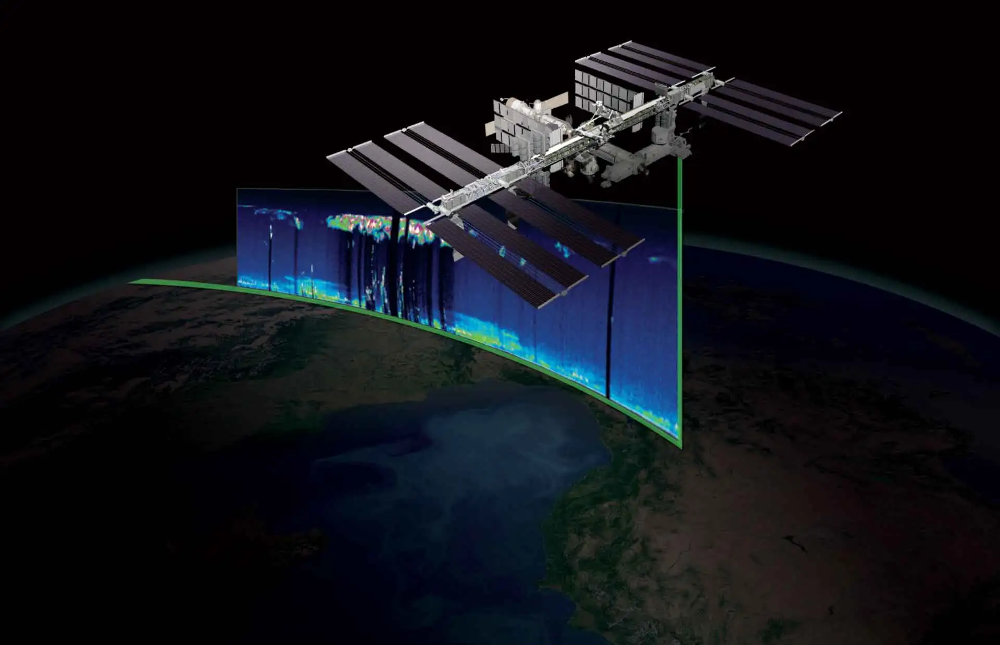
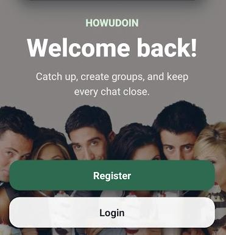

Sabancı University
B.Sc. in Computer Science and Engineering
GPA: 3.66/4.00
100% Honor Scholarship

Software Engineering Intern | Computer Science and Engineering Graduate
I am a candidate of Software Engineer who graduated from Sabancı University with a degree in Computer Science and Engineering. I enjoy building practical digital products and turning ideas into polished, user-friendly experiences. My interests span both frontend and backend development, with a particular appreciation for designing thoughtful interfaces and solving problems with attention to detail. I see myself as someone who enjoys creating meaningful things and presenting them to people, and I am continuing to improve my technical and design abilities as I work toward a career in software and web development.
B.Sc. in Computer Science and Engineering
Computer Science and Information Technologies
Mathematics and Natural Sciences
Software Engineering Intern
Summer Intern
Summer Intern
Student Representative Committee Member
PR Committee Member
Active Member

Developed and evaluated deep learning models for remote sensing scene classification across different geographic regions. Built satellite-image preprocessing, model training, and evaluation workflows, then analyzed performance on unseen regions to measure domain generalization.

Developed an LLM-based prototype that analyzes Playwright traces, screenshots, execution logs, and failure descriptions to identify faulty steps in failed mobile and web UI tests. Integrated OpenAI and Gemini APIs and evaluated the rankings with Top-1 accuracy, Top-3 accuracy, and Mean Reciprocal Rank.
Developed an NLP system for predicting graded word-sense plausibility in ambiguous narratives. Fine-tuned DeBERTa-v3-base, compared regression and ranking-based training objectives, and evaluated performance using Spearman correlation, mean squared error, ranking accuracy, and precision-recall analysis.

Developed a cloud-enhanced messaging application with Expo, React Native, TypeScript, and a Spring Boot REST API. Reworked persistence with Amazon DynamoDB, then containerized and deployed the backend on AWS using ECS Fargate, ECR, an Application Load Balancer, and CloudWatch.

Developed a full-stack geography quiz platform using the MERN stack. Implemented randomized quizzes, GitHub OAuth authentication, persistent quiz-history tracking, and a dynamic leaderboard that ranks users by quiz performance.

Developed a mobile messaging application with a React Native frontend and Spring Boot backend. Implemented authentication, friend and group management, messaging functionality, and the REST API endpoints connecting the application layers.

Developed a full-stack e-commerce application using Django and React. Implemented authentication, product browsing, cart management, and order processing, with a responsive interface integrated with backend API endpoints.